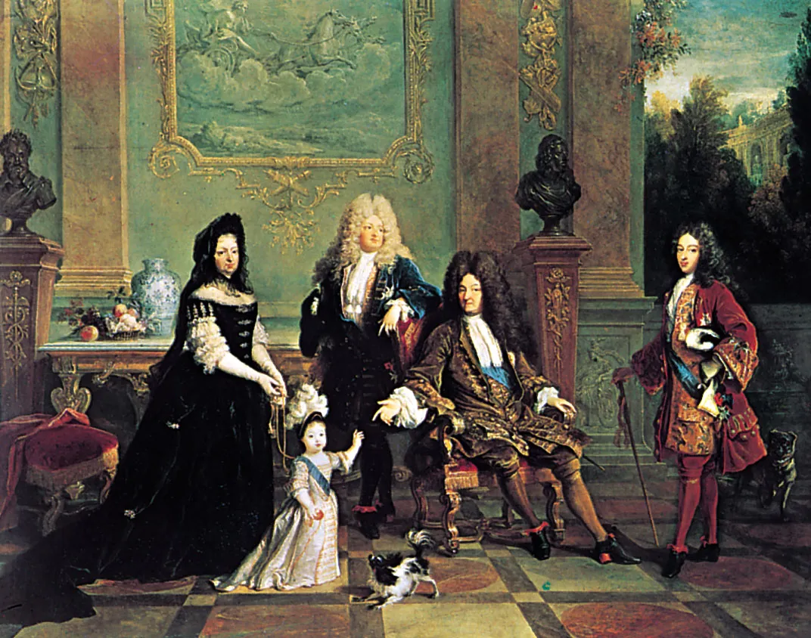
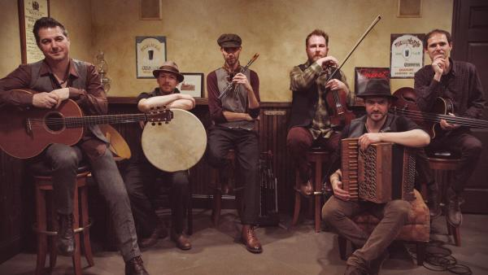

Paris is not just a city; it’s a vibrant cultural hub with exciting events and activities happening year-round. From art exhibitions to music festivals, here’s your interactive guide to making the most of your time in the City of Light!
🖼️ Art & Culture Events
Louvre Nights - Art After Dark
When: First Saturday of every month
What: Explore the iconic Louvre Museum under the stars with special guided tours and live music performances in the courtyards.
Don’t Miss: The breathtaking view of the glass pyramid illuminated at night!
Paris Fashion Week
When: Twice a year (Spring/Summer and Fall/Winter seasons)
What: Witness world-class fashion shows featuring top designers like Chanel and Louis Vuitton. Even if you can’t attend the shows, the city buzzes with chic pop-up shops and fashion exhibitions.
Pro Tip: Head to Palais de Tokyo for fashion-themed public

🎶 Music & Performance
Fête de la Musique (Music Day)
When: June 21 (Summer Solstice)
What: A citywide celebration with free live music in parks, streets, and cafés. From jazz to rock, every corner of Paris turns into a stage!
Fun Tip: Visit Montmartre for an eclectic mix of performances.
Opéra Bastille Performances
When: Ongoing throughout the year
What: Immerse yourself in classic operas, ballets, and orchestral performances in one of Paris’s most prestigious venues.
Highlight: Upcoming performances include La Traviata and Swan Lake.
